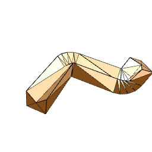
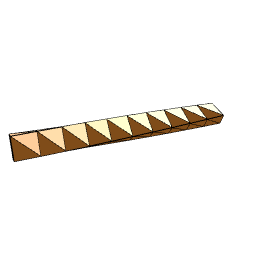
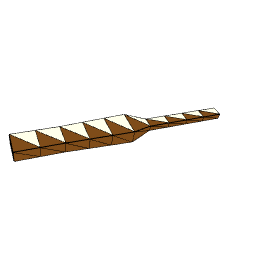
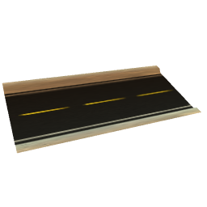
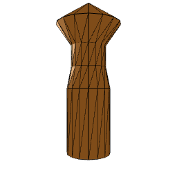
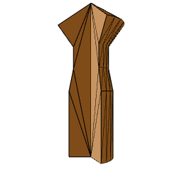

Extruder
Extrusion is an operation that consists in creating a mesh from a shape moved along a path.
That operation is particularly well suited for roads, pipelines, pillars...

Figure 1. Generic extrusion
Extrusion can also be applied to a multishape.

Figure 2. Extrusion of a multishape
Special options are available to influence the way the mesh is created :
- Rotation Track

Figure 3a. Rotation Track
- Scale Track

Figure 3b. Scale Track
- Shape Texture Track

Figure 3c. Shape Texture Track
Lathe
Lathe is an operation that takes a shape and rotates it around Y-axis to produce a mesh.

Figure 4. Generic Lathe
Lathe can also be restricted to a given angle range.

Figure 5. Lathe by a given angle range
Example
The Sample_Extrusion project demonstrates how to extrude various shapes.